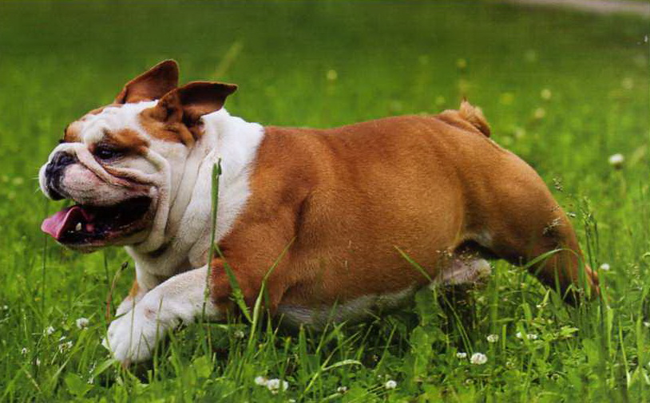

Английский бульдог
- Продолжительность жизни: 8-10 лет
- Группа: Неспортивная
- Окрас шерсти: рыжий; пятнистый; белый; желтый или любой другой. Чисто черный окрас не допускается селекционерами.
- Длина шерсти: короткая.
- Линька: умеренная.
- Рост: 38-40.
Английского бульдога трудно перепутать с другими породами. Это квадратная, коренастая, небольшая собака.
По всему ее облику заметны мощь, зрелость и эмоциональность.Шерсть английского бульдога – приятная на ощупь и короткая по длине.
На шее и вокруг хвоста могут быть складки кожи. Подгрудок – отличительная особенность английского бульдога.
Английский бульдог сегодня – собака-компаньон. Существо столь же преданное, сколь и чуткое, сопереживающее всему,
что происходит в доме, в его «стае». Слегка простоватый по натуре, бульдог весьма сообразителен.
Очень любит детей: понимает, что ребенок в семье – объект всеобщей любви, и старается подражать взрослым.
Бульдог может стать незаменимым компаньоном в детских играх: он шумен, азартен, нетерпелив и просто фонтанирует энергией.
Он плохо переносит одиночество и недостаток общения, становясь угрюмым и строптивым, впрочем, как любое живое существо.
Однако благодаря именно своему упрямству бульдог приобрел мировую славу, став талисманом многих спортивных клубов:
пса нельзя заставить силой или грубостью, но он охотно даст себя уговорить «по-хорошему».
Но главное – бульдог очень предан человеку, принимая его таким, каков тот есть: успешным или неуспешным,
счастливым или печальным, ленивым или энергичным – и всегда готов защитить своего хозяина в случае опасности.
Бульдоги не требуют нагрузок: с ними не нужно гулять подолгу или делать пробежки, напротив,
серьёзные физические нагрузки бульдогам противопоказаны. Бульдог привязан к своему дому, своему любимому месту в доме,
к своему хозяину. Порой их называют «собаками для лентяев» или «диванно-сторожевыми собаками».
